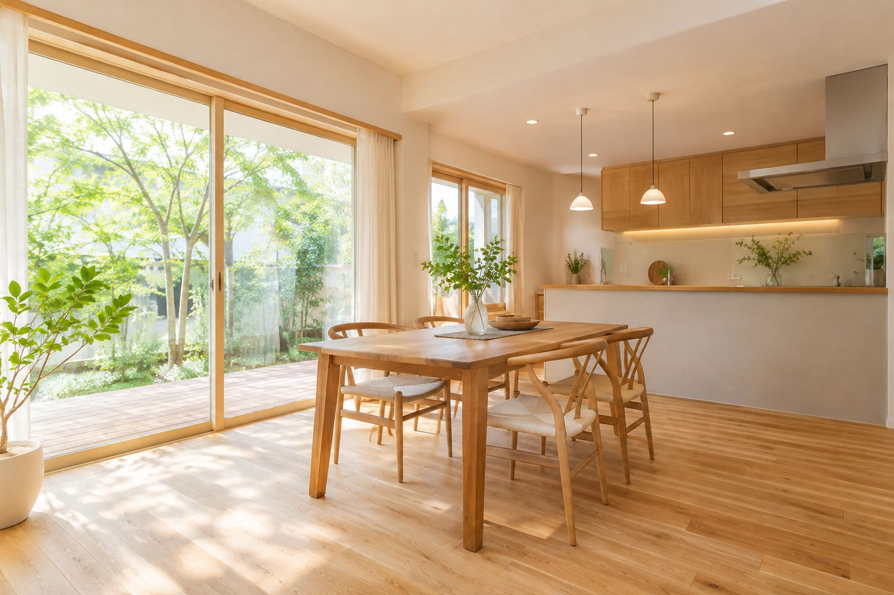

住まいを、次の世代へ。
RENOVATION & CARPENTRY
〇〇市で創業38年。キッチンやお風呂の部分リフォームから、古民家の再生まで。自社の大工が、最後まで責任をもって仕上げます。
CONCEPT
直して、整えて、
住み継ぐ。
家は、建てたときがいちばん良いとは限りません。暮らしに合わせて手を入れていくことで、少しずつ自分たちの家になっていきます。
すみつぐ工務店は、壊して新しくするのではなく、今ある住まいの良さを活かすリフォームを大切にしています。

38年創業から
1,200件施工実績
6名自社の大工
10年アフター点検
※数字はすべてサンプルです
SERVICE
リフォームメニュー
小さな修理から家まるごとまで。まずはお気軽にご相談ください。


PROMISE
すみつぐ工務店の
3つの約束
01
自社の大工が
最後まで施工
工事を丸投げせず、見積もりをした担当と自社の大工が最後まで責任をもちます。
02
見積もり後の
追加費用なし
現地調査で細かく確認し、ご契約後に費用が増えないお見積もりをお出しします。
03
10年間の
アフター点検
引き渡しのあとも、定期的に点検にうかがいます。小さな不具合もお気軽に。
VOICE
お客様の声
「冬の朝、台所に立つのが
苦にならなくなりました」
見積もりの段階で、床下の状態まで見てくれたのが決め手でした。工事中も毎日の報告があって安心でした。
〇〇市・60代ご夫婦（キッチン・浴室）「祖父の家を、
壊さずに残せてよかった」
建て替えしかないと思っていた古民家を、梁を活かして再生してもらいました。家族が集まる場所になっています。
〇〇村・40代ご家族（古民家再生）※お客様の声はサンプルです

CONTACT
まずは、無料の
現地調査から。
「どこから手をつければいいか分からない」という段階でも大丈夫です。
住まいの状態を一緒に見て、無理のない進め方をご提案します。